where's the share button?
hold ⌃⌥ and say it
"where's the share button?" "what does this error mean?" let go, and the triangle answers by your cursor, or flies off and points at the thing.
Pages
Trip notes
⌃⌥
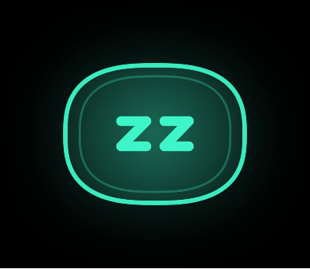
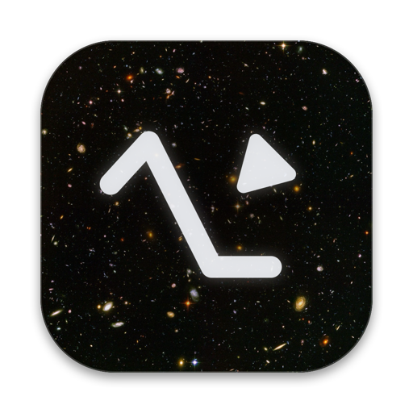
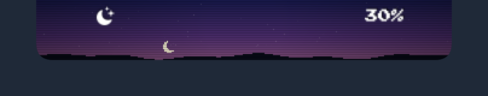
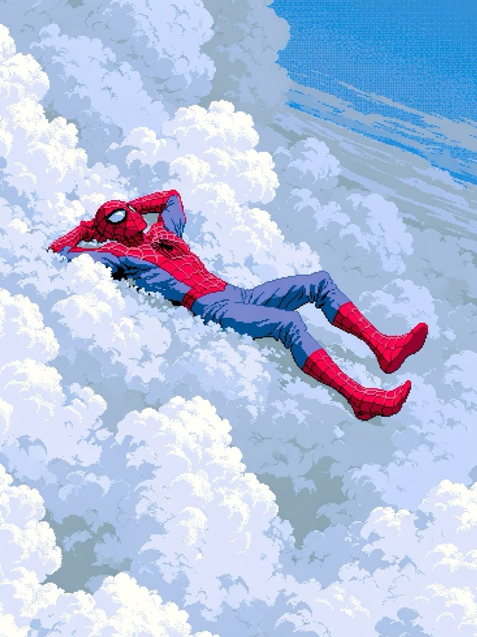
a little triangle that lives by your cursor
free · macOS on Apple silicon · 6.8 MB
doctors hate these 6 keyboard shortcuts
where's the share button?
"where's the share button?" "what does this error mean?" let go, and the triangle answers by your cursor, or flies off and points at the thing.
write a palindrome check in python
no mouse needed: tap ⌥⌘ twice and a chat opens to type in. follow up and it carries the conversation on; code comes back in a block you can copy.
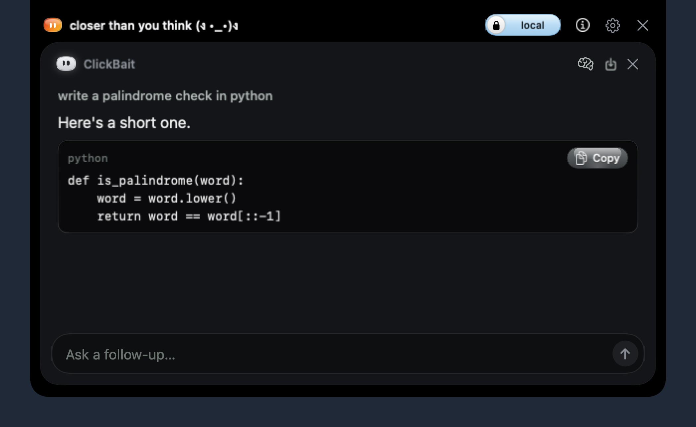
what does range do here?
a word you don't know, an error, a line of code. highlight it and tap ⌥⌘, or hold ⌥⌘ and circle anything on screen. it explains it in a card and answers follow-ups there.
total = 0
for i in range(10):
total += i
print(total)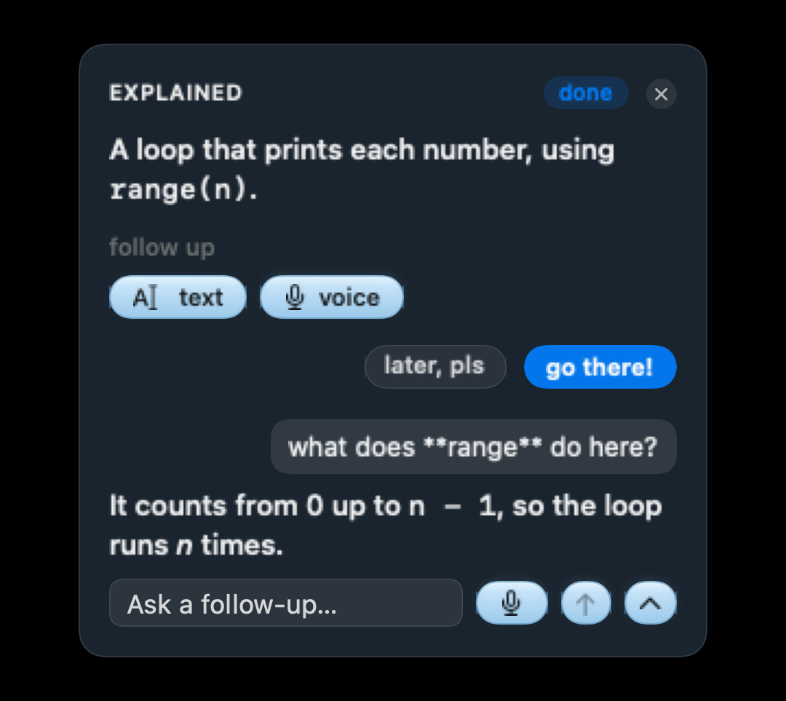
what's this?
draw round a chart, a diagram or a photo. on a picture with no labels it tours the parts with red ~ name pills. the ~ is honesty: the names are its best guess.
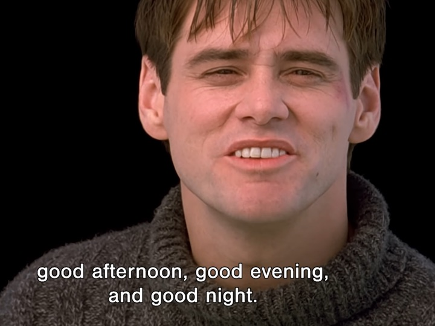
give it to me in point form
your words land in whatever you're typing in, tidied, with the ums taken out. say "give it to me in point form" and it rewrites your draft.
dark mode on
open an app, make a note, set a reminder, turn the volume down, make a folder. your Mac does as it's told, and anything that deletes, quits or shuts down asks first.
open Safariopened Safari
make a note: call the plumberadded a note
dark mode onit's dark now
volume to thirtyvolume 30%
remind me to stretch at fouradded to Reminders, 4:00 PM
new folder called receiptsmade "receipts"
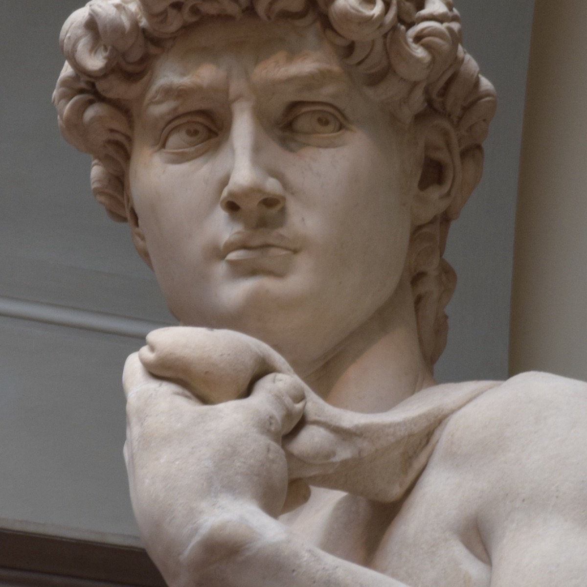
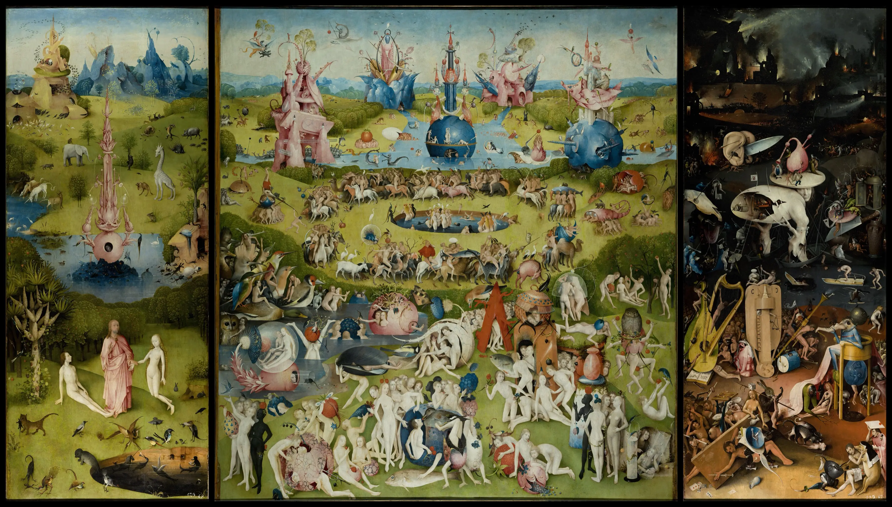
number 4 will shock you
azure following your cursor, or pointing at what you asked about.
they don't want you to know this
it thinks with Gemma, a model that runs on your Mac, and starts every day on local. flip the switch in the notch to online to look things up. flip it back and it's yours alone.
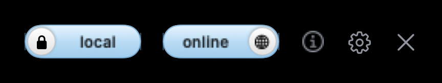
you won't believe how easy this is
ask "show me how to clear my history in Safari". it plans the steps, takes you to the right window and points at each click, waiting for you before the next. it stops before anything that deletes.
This removes your browsing history on this Mac.
apple doesn't want you to see this
point at the top of your screen and it slides down. tap through what's in it. these are the app's own screens.
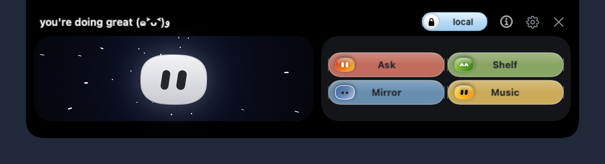
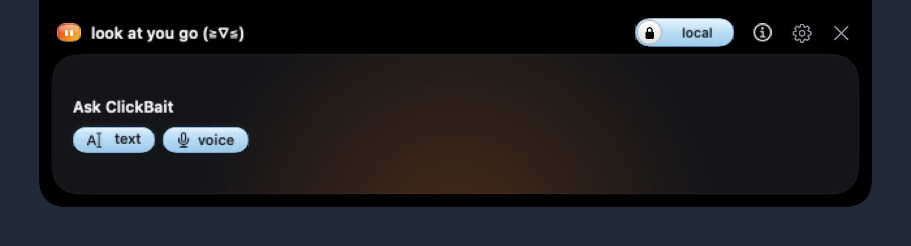
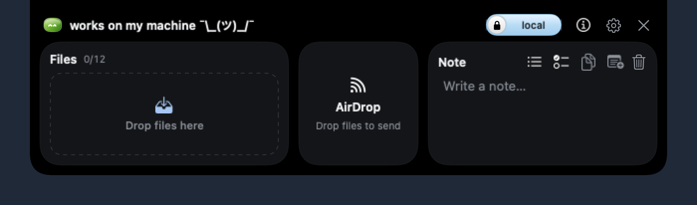
Apple Music
Spotify
YouTube
Home: the bean floats in hyperspace while nothing plays (when music plays, its cover takes the card), next to four pills: Ask, Shelf, Mirror and Music. Up top, the local and online switch, the keys, settings and close.
Ask: type a question beside the bean and press Return. It goes to ClickBait's chat, the same one as double-tapping ⌥⌘, and the notch folds away.
Shelf: drop up to 12 files to keep them handy (drag one out to use it, right-click to show it in Finder), send them with AirDrop, or jot a quick note with lists and checkboxes.
Mirror: a photo booth with your camera, mirrored. A 3-2-1 countdown and a flash, and the last four shots to drag out or save to Pictures. Unsaved shots are deleted when it closes.
Music: the cover big with its controls, and Apple Music, Spotify and YouTube down the side, the one playing marked. Click another to switch to it.
Volume: the volume keys play a Pac-Man level. Turn it up and he chomps right, the pellets behind him turning green; mute it and he greys out, the ghosts turning blue. try it with − and +.
Brightness: a pixel sky that travels through the day with your screen's brightness, from stars and the moon at night to the sun at noon. try it with − and +.
set up in 5 minutes (not really)
about fifteen minutes, most of it a download you can walk away from. a setup window takes you through each step.
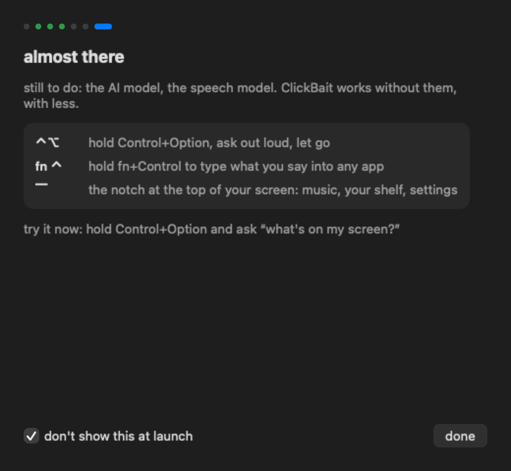
| drag to Applications, open it | 10 s |
|---|---|
| Privacy & Security: Open Anyway | 20 s |
| microphone | 5 s |
| Accessibility and Screen Recording | 1 min |
| Ollama, then Gemma (6.6 GB) | 10 min |
| speech model | 2 min |
| you're set | ≈ 15 min |
needs a Mac with Apple silicon (M1 or newer) and about 12 GB free. 16 GB of memory is comfortable.
faqs they don't want you to read
still wondering? ask clickbait. it answers questions about itself too.
not while it's on local, which is how it starts every day. on online, only web lookups and video thumbnails go out, and only when you ask.
Apple silicon (M1 or newer) and about 12 GB free. 16 GB of memory is comfortable; 8 GB works, more slowly.
it isn't notarised by Apple yet. open System Settings, go to Privacy & Security, scroll down and click Open Anyway. you only do this once.
a free app that runs AI models on your own Mac. setup gets it and downloads Gemma for you, with a progress bar.
it asks before anything that deletes, quits or shuts down, and a walkthrough stops before the button that would clear or erase.
nothing, while it's early.
last chance!!!
download, drag it in, and say hello. it says hello back.
download for mac